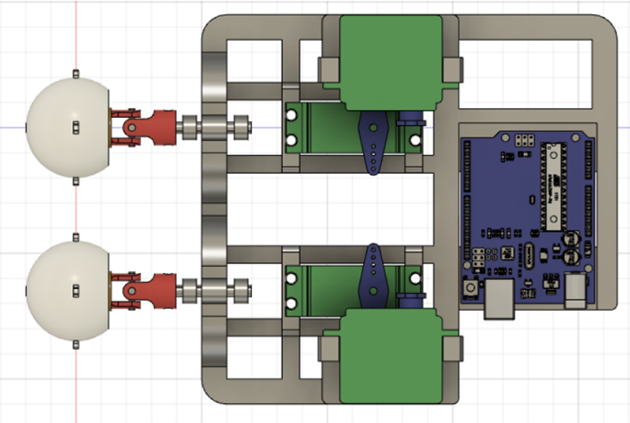

#
#
#
# Kassia Love
B.A. Degree in Biomedical Engineering and Neuroscience
Research Fellow at Mass Eye and Ear Hospital
Research: Vestibular System/ Computational Neuroscience
Making Computational Models of Postural Control and Spatial Orientation Tasks

<img src="./Eyeball_closeUp.GIF" height="500px" class="rounded float-left">
<img src="./Angles.GIF" height="500px" class="rounded float-left">
<img src="./Grey_closeUp.GIF" height="500px" class="rounded float-left">
<img src="./LatestModel.GIF" height="500px" class="rounded float-left">
<img src="./Vert_Angles.GIF" width="60%" class="rounded float-left">
#
#
#
<img src="./final1.png" width="50%" class="rounded float-left">